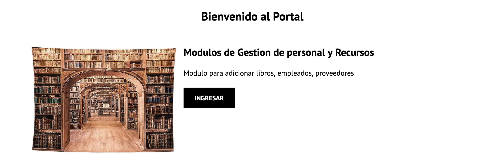

Manual de Usuario
Acceso al Sistema
Acceso al Sistema El ingreso se realizará desde la siguiente dirección electrónica http://ElRincondelasletras/login.html en la cual, una vez que usted se autentifique como usuario autorizado (empleado, administrador), podrá ingresar al sistema. A continuación se muestra la página de inicio del sistema:
Una vez que acceda al sistema, será dirigido al portal principal. Aquí, tendrá la opción de acceder a dos módulos: el "Módulo Administrativo" y el "Módulo de Gestión de Personal y Recursos". En el "Módulo de Gestión de Personal y Recursos", podrá administrar libros, empleados, bodegas y proveedores.
-----------------
Dentro del "Módulo Administrativo", encontrará secciones dedicadas a "Facturación", "Ventas" y "Recursos Humanos". En cada una de estas secciones, podrá generar y administrar los recursos correspondientes.
-----------------
Gestión de libros
Dentro de la sección de "Gestión de Libros", el usuario encontrará herramientas diseñadas específicamente para administrar y organizar la biblioteca de publicaciones. Aquí, podrá realizar una serie de funciones esenciales:
- Registro de Libros: Permite al usuario agregar nuevos títulos a la base de datos, ingresando detalles clave como autor, fecha de publicación, género, y ISBN
- Búsqueda y Consulta: Ofrece la capacidad de buscar títulos específicos, filtrar por diferentes criterios, y visualizar detalles completos de cada libro.
- Edición y Actualización: En caso de cambios o errores, el usuario puede modificar la información de los libros ya registrados en el sistema.
Haga click en "añadir" para ingresar al modulo
Luego click en "agregar libro" desplegara el menu para ingresar todos los campos necesarios
Finalmente, click en ok para adicionar el libro
-----------------Gestión de Empleados
En la sección de "Gestión de Empleados", el usuario tiene a su disposición una serie de herramientas diseñadas para administrar y organizar la información relacionada con el personal de la organización. Esta sección ofrece las siguientes funcionalidades:
- Registro de Empleados: Facilita la incorporación de nuevos empleados al sistema, permitiendo ingresar detalles como nombre, número de identificación, cargo, fecha de inicio, entre otros datos relevantes.
- Búsqueda y Visualización: Proporciona opciones para buscar empleados específicos, filtrar por departamento, cargo o cualquier otro criterio, y v isualizar perfiles completos con toda la información del empleado.
- Actualización de Información: En caso de cambios en los datos del empleado, promociones o cualquier otro evento relevante, el usuario puede fácilmente actualizar los registros existentes.

Haga click en "añadir" para ingresar al modulo
Luego click en "agregar empleado" desplegara el menu para ingresar todos los campos necesarios
Finalmente, click en ok para adicionar el libro